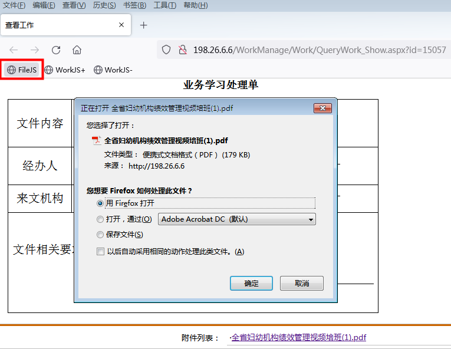

黑客与药师——OA的研究(一)
缘起
如果要用一个词评价我们医院所使用的的OA系统，那应该就是“落后”。我没有重写一个的打算，而且我也接触不到后端的代码，毕竟工作不是这个。但我又实在忍受不了一些低效的操作。我试着仅从前端的角度实现一些我想要的功能，并将我的折腾写成了这篇文章。你可能会疑惑，既然我改不了服务器上的代码，那么我是怎么实现的呢？这是因为某天我知晓了浏览器可以通过书签运行JavaScript代码而达到引入页面的效果（FireFox/Chrome/Edge可以，IE据说不行），这就为我打开了一扇窗户。
附件与命名
之前在临床科室体会不了，但在医务科接触的OA附件实在太多，要是每个文件都要像下面这样自己重命名的话，那简直是一种折磨。
我可以理解附件名将中文转换成ASCII字符的做法，但好歹加一个“download”属性啊。我的做法建立一个专门处理附件的工具栏JS书签如下：
1 | javascript: |
逻辑就是，获取附件所在的a标签，取得其描述文本，再往标签里设置一个“download”属性，值为描述文本，然后模拟点击。这样我只要点击一下该JS书签将其引入页面就可以了，然后选择文件处理方式，只需要两步就可以了。而在这之前，我的操作步骤是这样的：
【1.选中a标签的描述文本】-【2. 复制Ctrl +C】-【3.右键单击】-【4.从链接另存文件为】-【5. 重命名 粘贴Ctrl +V】-【6.保存确定】
将6步简成了2步，顿时感觉世界清爽了很多不是。在步骤上，这里前端的实现和后端其实是一样的。其实OA上是有一个点击在线预览的功能实现的，但浏览器上的操作终归没有专业软件方便，比如修改或批注之类的。

工作的处理
对于工作列表的处理，以前我的操作是这样的：
【1.进入工作列表】-【2.点击某个具体工作】-【3.工作处理】-【4.回退工作列表】-【5.下一项工作】
我期望的工作模式是这样的：
【1.某项具体工作】-【2.工作处理】-【3.下一项工作】
因为url地址规范且有规律，我可以通过自己构造url来访问我需要的资源，如果每次都要自己手动在地址栏变更参数的话，我想我宁愿借助列表逐个点击。但如果能通过JS完成对地址栏url的变更，那基本就在前端实现了一个爬虫了。我的实现代码如下：
1 | javascript: |
首先调用getSearch()取得地址栏url查询参数，参数id+1指向下一个工作，然后调用changeURLArg构造出下一个工作的url，然后赋值给window.location.href实现跳转。其实只有一个url查询参数id，代码本可以更简约，但考虑到扩展性，索性就实现了两个函数。同样的道理，往前的操作只要id-1就可以了。
就这样，我实现了只要点击一下JS书签就可以处理下一个工作了。当然我可以设置一个定时器，让它执行一定逻辑等待一定时间就自动跳到下一个
1 | setTimeout(function () { |
自动执行一些类似简单阅读或自动回复“收到”等傻瓜操作应该是可行的，但对一些要具体处理的显然是不负责任的。但如果实现一个人工智能AI，并将操作转给AI却是可以尝试的。就比如我正在想实现的一个AI功能是：将图片式PDF识别成可检索的文本。如果实现了接口，可以借助ajax来调用。我原本的想法用爬虫将OA的文件全爬到本地下来，然后再对其进行识别建立索引。但现在又有新的方式了。实现了文本识别和检索，后面就可以做文本分析和情感分析了，提取工作重点。特事特办，要事要办，急事急办，技术是第一生产力，面对文山会海，才能游刃有余。而且我隐约觉得情商的缺陷可以在一定程度通过技术手段来弥补。想得有点远了就是，但理论上是可行的，而且我感觉我可以实现。